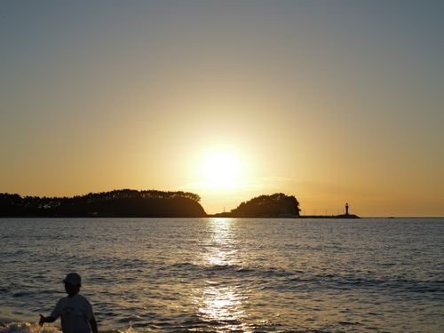

2027.08.15 · 캡슐 3개
우리의 여름 바다
숲을 지나 바다에 닿았던 하루.


앨범 정리
제목과 묶음을 수정해요
그날 남긴 목소리

잠김
숲을 지나며
15:20 · 대관령 숲길 · 나만

잠김
노을 앞의 약속
18:40 · 경포해변 · 가족
잠김
바다 냄새 나!
20:14 · 강릉 안목해변 · 하윤에게
2045.08.15부터 · 현장에서
 공유한 앨범에서도 음성은 각 장소에 도착해야 들을 수 있어요.
공유한 앨범에서도 음성은 각 장소에 도착해야 들을 수 있어요.

이 길 다시 가기
캡슐이 있는 장소를 경로로 이어보세요